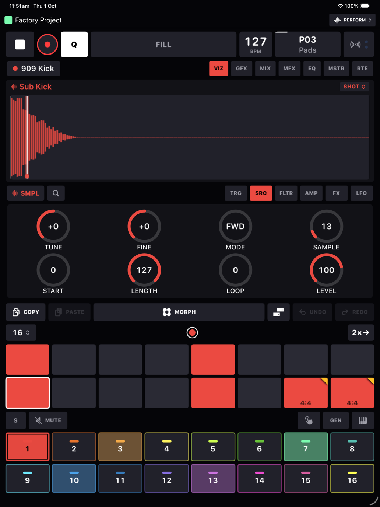

HeartBeat Manual
HeartBeat is a 16-track groovebox for iPhone and iPad. A step sequencer in the hardware tradition drives samplers, synths, plugins and your external gear, and a layer of performance tools sits on top. This manual goes through all of it, one chapter per area. You don't need to read it in order.
The Perform screen
You'll spend most of your time on the Perform screen. Along the very top is the project's name with its colour square, and on the right a menu that switches between PERFORM, PROJECTS and SETTINGS. Below that, from the top down:
| Band | What it is |
|---|---|
| Transport | Play, record, Q, FILL, the tempo, the pattern button, and the MIDI learn button with its little in and out lights. → |
| Top carousel | Swipeable pages. VIZ shows what the selected device is doing; GFX is the delay and reverb; then the MIX mixer, MFX DJ effects, EQ, MSTR dynamics and RTE compressor routing. → |
| Param area | TRG, the step editor, followed by the selected device's knob pages. Latch a step and the knobs write p-locks to it instead of changing the track. → |
| Step grid | 16 steps a page, up to 128 per track, with COPY, PASTE, the piano roll button, UNDO and REDO above it. → |
| Track pads | 16 pads, one per track. The row above them changes what a pad does: MUTE, PLAY, MORPH, GEN or KEYS. → |
Turn the phone on its side and the same five bands rearrange into a two-by-two grid. The transport moves up into the header, the carousel sits next to the knob pages, and the steps sit next to the pads. Nothing is hidden and nothing shrinks. On an iPad the whole board grows to fill the screen in either orientation.


The colour language
A few colours mean the same thing everywhere, so once you've learned them you can read any screen at a glance.
- Each track has its own hue, and it follows the track onto its pad, its steps, its fader, its meter and its waveform.
- Amber means something is set on the step, or armed: p-locks, lock notches, a queued pattern, a page loop, FILL.
- Cyan is only ever MIDI learn.
- Violet is morphs, and red is record.
- Green and red LEDs on the keyboard and down the piano roll's gutter show which notes are in the pattern's scale and which aren't.
Five minutes to a beat
- Pick a track. Tap pad 1. A new sampler track with an empty pool loads the factory drum kit for you.
- Put some trigs down. Tap steps 1, 5, 9 and 13. Press play.
- Shape it. Swipe the param area across to FLTR or AMP and turn things. The display above follows along.
- Lock a step. Hold step 5 until it latches, then turn FREQ. The knob's arc and the step's corner go amber. That step now has its own filter setting. Unlatch and carry on.
- Add some life. Hold FILL on the steps you want only in fills, drop a step's PROB under 100, or put an LFO on the filter. After that, have a look at the devices, the piano roll and morphs.
Chapters
| Sequencer | Trigs, p-locks, conditions, retrigs, section loops, recording, patterns, song mode, mutes, the live keyboard, the track sheet. |
| Devices | The sampler's six modes, the synths, the AU plugin host and the MIDI device, page by page. |
| Piano roll | The note editor: gestures, chords, velocities, loop braces, scales and its own undo. |
| Sampling | Recording, resampling, the slice editor, the sample and wavetable pools, the factory library. |
| Modulation | LFOs, recorded knob moves, and morphs. |
| FX & mixer | Sends, the mixer, DJ effects, EQ, compression, limiting and routing. |
| MIDI & Link | Learn mode, sequencing hardware, getting MIDI in, clock out, Ableton Link, and the Settings page. |
| Projects & files | Projects, autosave and undo, presets, exporting a song, iCloud, and what lives where on disk. |